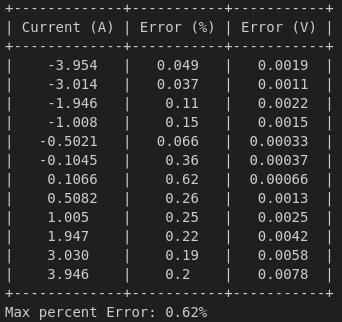
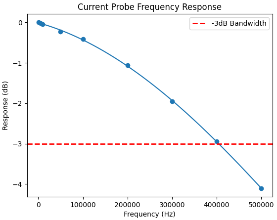
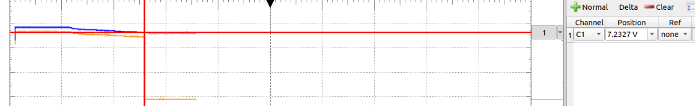
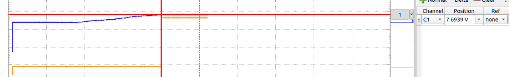
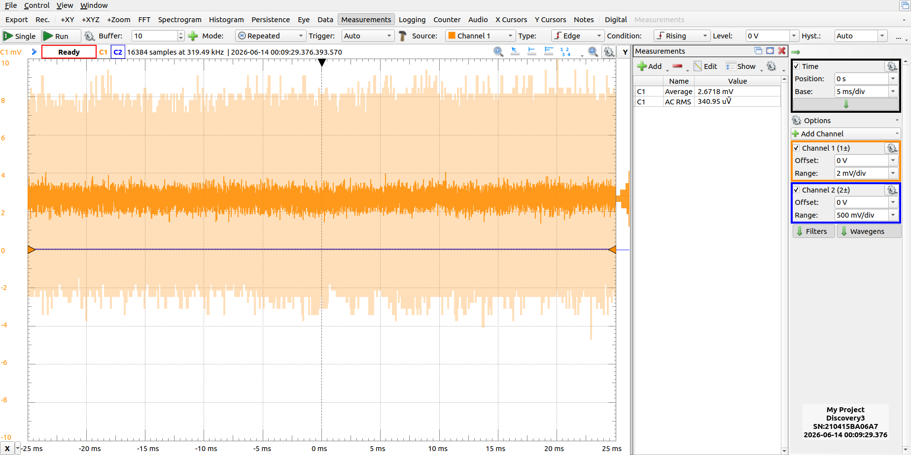
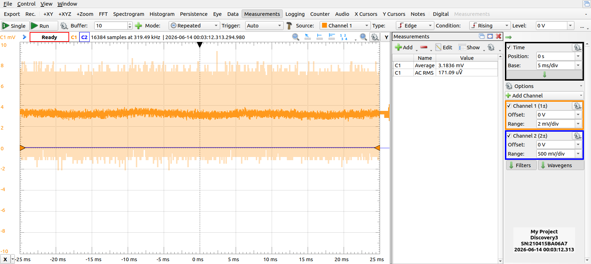

Description
Details
We will go through the circuit and operation a little bit here. The schematic is attached. Download it and take a look if you care.
Basically we just have a shunt and a differential amplifier with a non-inverting stage to add some gains. The gains gives a 1:1 voltage current ratio. It is fused at 6A, but I have tested accuracy up to ~4A. Note the precise resistors used for the differential amplifier.

And I guess current is a signed quantity which means we want to measure negative current. To do this we will need a negative rail. I used a charge pump IC to do this. It turns out utilizing these things is a real pain in the ass. I started by using LM2776. Don't use this thing it has real problems. I won't go into them as they are documented online.I then switched to the classic 7660. This one gave me a nice clean negative rail no problem, but I did another stupid and used ceramic capacitors. You can of course hear them in these switching circuits. So I had to replace the ceramics with electrolytic caps which normally I hate using. I also wasn't going to do another board spin for this. There are a bunch of awkwardly soldered through hole electrolytics on the 0805 pads.
The frequency response is also problematic. Ideally it would be flatter than this. The op amp might make it roll off faster than it should. Really the cutoff frequency should be ~530kHz. I will probably mostly use this thing close to DC though, so I'm not going to worry about it too much.

The low battery circuit is mostly fine. There is some hysteresis with ~0.5V between the up going threshold and the down going threshold.
Low Battery Threshold

Low Battery Off Threshold
One improvement would be a strategically placed cap so there isn't a flicker when the on/off switch is flipped.Project Logs
I realized I never measured the noise of this thing before. Here it's now:

We are getting close to the noise floor of the scope. Here is an open scope:

As a side note this this AD3 has a surprising amount of offset and no offset null feature. Subtracting the scope noise using the root sum square method, we get about 300uVrms of noise. This is the same order of magnitude as my calculations. This noise is really what sets the lowest current that can be measured with the probe.